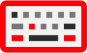

Broader reach, better localization
Delphi Keymap is now published to Open VSX and runs in the browser, while new localization support keeps messages readable in more languages.

Delphi KeymapVisual Studio Code Extension
Delphi Keymap ports the popular Delphi keyboard shortcuts to Visual Studio Code, so you can debug, edit, and navigate the way you always have, without retraining your hands.
| Command | Keyboard Shortcut |
|---|---|
| Help | F1 |
| Save All | Ctrl + Shift + S |
| Find / Replace | Ctrl + H |
| Format | Ctrl + D |
| Go To Line | Alt + G |
| IDE Insight | Ctrl + . |
| Refactor / Rename | Ctrl + Shift + E |
| Comment Line | Ctrl + ; |
| Delete Line | Ctrl + Y |
| Toggle Breakpoint | F5 |
| Compile | Ctrl + F9 |
| Run | F9 |
| Step Over | F8 |
| Step Into | F7 |
What's new in 9.8
Delphi Keymap is now published to Open VSX and runs in the browser, while new localization support keeps messages readable in more languages.
Features
A full set of debugging, editing, and navigation keybindings ported from the Delphi IDE.
02Select a symbol and jump straight to its Embarcadero DocWiki documentation page.
03Select the word under the cursor with a single command, just like in Delphi.
04Runs in the desktop and in the browser, available for VS Code and any other compatible editor.
Delphi shortcuts
Delphi Keymap remaps VS Code's built-in commands to the keyboard shortcuts Delphi developers rely on every day, covering debugging, formatting, refactoring, and cursor movement.
Basic commands like F9 (Run/Continue), F8 (Step Over) and F7 (Step Into).
Commands like Ctrl + D (Format), Ctrl + Y (Delete Line), Ctrl + ; (Comment Line) and others like Ctrl + Shift + E (Rename), Ctrl + G (Go To Declaration), Alt + G (Go To Line).
DocWiki help
Press F1 (or run Delphi Keymap: DocWiki Help) to open Embarcadero's DocWiki
documentation for the selected symbol, using the Delphi release configured in settings.
delphiKeybindings.delphiVersionInDocWiki{
"delphiKeybindings.delphiVersionInDocWiki": "Tokyo"
}Select Word
FAQ
It remaps VS Code's built-in commands to the keyboard shortcuts you already use in Delphi, covering debugging (F9, F8, F7, F5), editing (Ctrl + D, Ctrl + Y, Ctrl + ;), and navigation (Ctrl + G, Alt + G). No new editor behavior is added, only familiar key bindings.
Select or place the cursor on a symbol and run Delphi Keymap: DocWiki Help (or press F1). It opens the Embarcadero DocWiki page for that symbol using the Delphi version set in delphiKeybindings.delphiVersionInDocWiki.
By default it uses Delphi 11 Alexandria. You can change it to Sydney, Rio, Tokyo, Berlin, or Seattle through the delphiKeybindings.delphiVersionInDocWiki setting.
Yes! Delphi Keymap ships both desktop and web bundles, supports virtual workspaces, and works with untrusted workspaces, so it runs in vscode.dev, github.dev, and restricted environments.
If you're looking for the same Bookmarks experience from Delphi, check out the companion Numbered Bookmarks extension.
Yes! It works on all VS Code forks, ensuring compatibility and seamless integration with your favorite tools.
If you have a feature request, bug report, or suggestion, please submit it through our GitHub Issues page. We appreciate your feedback!
If you have a question that's not covered in the FAQ, feel free to reach out through our support channels at GitHub Discussions. We're here to help!
Donate
Delphi Keymap is open source, and your support helps keep maintenance, improvements, and ecosystem compatibility moving forward.